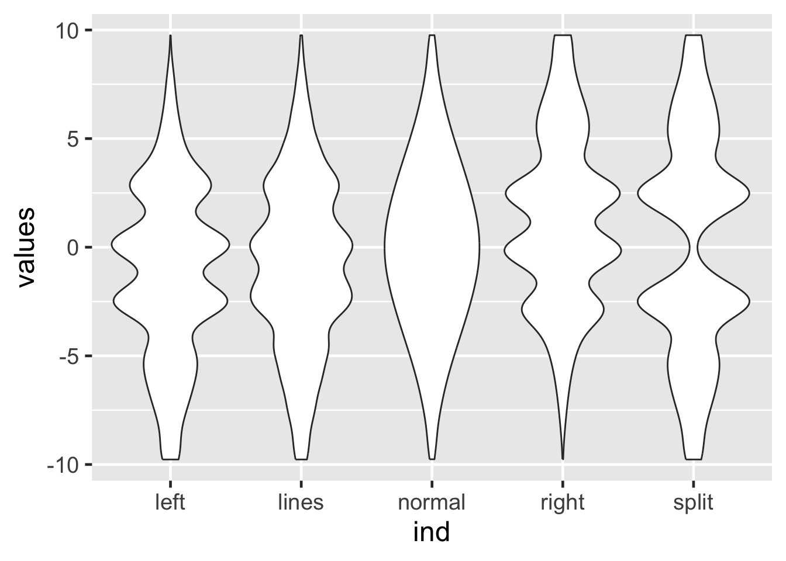

10 R Graphics Exercise
10.1 Load Libraries
library(tidyverse)
library(ggforce)
# library(tidylog) Set the default font to be a bit larger:
theme_set(theme_gray(base_size = 18))10.2 Exercise 1
Read in and set up the data set b, a cleaned version of our simulated data set:
a <- read.csv("data/study1.csv")
a$ind <- seq_along(a$t)
b <- a[-c(1001:1004), ]
b$g.f <- factor(b$g)
b$geno <- paste(b$all1, b$all2, sep = "/")Using ggplot and data set b, plot ind vs. t, coloring by case-control status (trait). What do you observe about the data?
ggplot(data = b, aes(x = ind, y = t, color = trait)) + geom_point()
10.3 Exercise 2
Using ggplot, plot ind vs. t, coloring by case-control status (trait) and faceting by geno. What do you observe about the data?
ggplot(data = b, aes(x = ind, y = t, color = trait)) + geom_point() + facet_grid(~geno)
10.4 Always plot your data
library(tidyverse)
d <- read_tsv("data/example.tsv")New names:
* x -> x...1
* y -> y...2
* x -> x...3
* y -> y...4
* x -> x...5
* ...Rows: 142 Columns: 26
── Column specification ────────────────────────────────────────────────────────
Delimiter: "\t"
dbl (26): x...1, y...2, x...3, y...4, x...5, y...6, x...7, y...8, x...9, y.....
ℹ Use `spec()` to retrieve the full column specification for this data.
ℹ Specify the column types or set `show_col_types = FALSE` to quiet this message.n1 <- rep(c("x", "y"), 13)
n2 <- c("", "", rep("_", 24))
n3 <- c("", "", c(sort(rep(c(1:12), 2))))
names(d) <- paste0(n1, n2, n3)
names(d) [1] "x" "y" "x_1" "y_1" "x_2" "y_2" "x_3" "y_3" "x_4" "y_4"
[11] "x_5" "y_5" "x_6" "y_6" "x_7" "y_7" "x_8" "y_8" "x_9" "y_9"
[21] "x_10" "y_10" "x_11" "y_11" "x_12" "y_12"10.5 Similar regression lines
These three data sets have very similar regression lines:
summary(lm(x ~ y, data = d)) %>%
coef() Estimate Std. Error t value Pr(>|t|)
(Intercept) 56.17563819 2.87986960 19.5063131 9.435087e-42
y -0.03991951 0.05250204 -0.7603419 4.483288e-01summary(lm(x_1 ~ y_1, data = d)) %>%
coef() Estimate Std. Error t value Pr(>|t|)
(Intercept) 56.31108156 2.87906158 19.5588319 7.158847e-42
y_1 -0.04269949 0.05249244 -0.8134407 4.173467e-01summary(lm(x_3 ~ y_3, data = d)) %>%
coef() Estimate Std. Error t value Pr(>|t|)
(Intercept) 56.18271411 2.87924135 19.5130270 9.107718e-42
y_3 -0.04012859 0.05249468 -0.7644316 4.458966e-01ggplot(d, aes(x = x, y = y)) + geom_point() + geom_smooth(method = "lm") + ggtitle("Linear regression of y ~ x")
Now try this:
ggplot(d,aes(x=x_1,y=y_1)) + geom_point() +
geom_smooth(method="lm")ggplot(d, aes(x = x_1, y = y_1)) + geom_point() + geom_smooth(method = "lm") + ggtitle("Linear regression of y_1 ~ x_1")`geom_smooth()` using formula 'y ~ x'
And now try this:
ggplot(d,aes(x=x_3,y=y_3)) + geom_point() +
geom_smooth(method="lm")10.5.1 Always plot your data!
ggplot(d, aes(x = x_3, y = y_3)) + geom_point() + geom_smooth(method = "lm") + ggtitle("Linear regression of y_3 ~ x_3")`geom_smooth()` using formula 'y ~ x'
10.6 Always plot your data
f <- read_tsv("data/BoxPlots.tsv")
# Delete the first column
f <- f[, -1]
head(f)# A tibble: 6 × 5
left lines normal right split
<dbl> <dbl> <dbl> <dbl> <dbl>
1 -9.77 -9.77 -9.76 -9.76 -9.77
2 -9.76 -9.74 -9.72 -9.05 -9.77
3 -9.75 -9.77 -9.68 -8.51 -9.77
4 -9.77 -9.77 -9.64 -8.24 -9.77
5 -9.76 -9.77 -9.6 -8.82 -9.77
6 -9.77 -9.76 -9.56 -8.07 -9.76Stacking vectors concatenates multiple vectors into a single vector along with a factor indicating where each observation originated.
head(stack(f), 2) values ind
1 -9.769107 left
2 -9.763145 leftNow try this:
ggplot(stack(f), aes(x = ind, y = values)) +
geom_boxplot()10.7 Identical box plots
These data have essentially identical box plots.

10.8 Boxplots
While the box plots are identical, box plots may not tell the whole story.
Let’s try violin plots instead:
ggplot(stack(f), aes(x = ind, y = values)) +
geom_violin()A violin plot is a mirrored density plot.
10.9 Non-identical violin plots

10.10 Sina plots
Sidiropoulos, N., Sohi, S.H., Rapin, N., and Bagger, F.O. (2015). SinaPlot: an enhanced chart for simple and truthful representation of single observations over multiple classes. bioRxiv 28191. https://www.biorxiv.org/content/early/2015/10/02/028191
library(ggforce)
ggplot(stack(f), aes(x = ind, y = values)) +
geom_violin() + geom_sina()10.11 Sina plots

10.12 Sina plots
method == "counts": The borders are defined by the number of samples that occupy the same bin.
ggplot(stack(f), aes(x = ind, y = values)) +
geom_violin() + geom_sina(method="count")10.13 Sina plots

10.14 Source of data
Illustrative data sets from https://www.autodeskresearch.com/publications/samestats